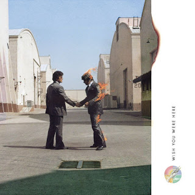

rajongói oldal
A Pink Floyd híres lebilincselő koncertjeiről, melyek során zenéjüket szélsőséges látványelemekkel társították, így maguk az előadók másodlagossá váltak. Sosem használtak óriási kivetítőket, melyeken ők voltak, mert szerintük „úgysem csináltak sok mindent”. Ehelyett inkább rövid filmeket, klipeket vetítettek. A látvány mellett a Pink Floyd a hangminőségben is mércét állít fel a hangeffektusok innovatív használatával és a pásztázó kvadrofonikus hangszórórendszerekkel.
A Pink Floyd az első bandák között volt, akik dedikált utazó fényshow-t használtak fellépéseikkel együtt. A Barrett-korszakban a dinamikus folyékony fényshow - kat hatalmas képernyőkre vetítették a zenekar mögött, miközben játszottak, és a zenekar nagyszámú villogót is beépített, amelyeket egy mérnök manuálisan vezérelt. Ez teljesen eltakarta magát a zenekart, kivéve az árnyékaikat, amit Barrett kihasznált: feltartotta a karját azokban a részekben, ahol nem kellett játszania, amitől az árnyéka nőtt, zsugorodott és hullámosodott, ami tovább fokozta a vizuális látvány. Sok ilyen világítási technikát fejlesztettek ki a Mike Leonard fényművésszel való korai kapcsolatuk révén.
A Pink Floyd karrierje során széles körben használtak pirotechnikát (például felrobbanó villanópottyúkat, felrobbanó gongot és tűzijátékot ) és a szárazjeget. A The Dark Side of the Moon 1973-as turnéján egy nagyméretű repülőgépmodell elrepült a közönség felett, és látványos robbanással a színpadra zuhant, ami a The Wall és a Division Bell bemutatók elején is megismétlődött.
Pályafutása során a Pink Floyd 15 stúdióalbumot, 3 koncertfelvételt, egy félig koncert-, félig stúdióalbumot és több válogatást adott ki. A csoport több mint 250 millió lemezt adott el világszerte, ebből 75 milliót az Egyesült Államokban.
| Stúdióalbumok | |
| Cím | Év |
| The Piper at the Gates of Dawn | 1967 |
| A Saucerful of Secrets | 1968 |
| Music from the Film More | 1969 |
| Ummagumma | 1969 |
| Atom Heart Mother | 1970 |
| Meddle | 1971 |
| Obscured by Clouds | 1972 |
| The Dark Side of The Moon | 1973 |
| Wish You Were Here | 1975 |
| Animals | 1977 |
| The Wall | 1979 |
| The Final Cut | 1983 |
| A Momentary Lapse of Reason | 1987 |
| The Division Bell | 1994 |
| The Endless River | 2014 |

|

|

|

|
|

|

|
 |

|
|

|

|